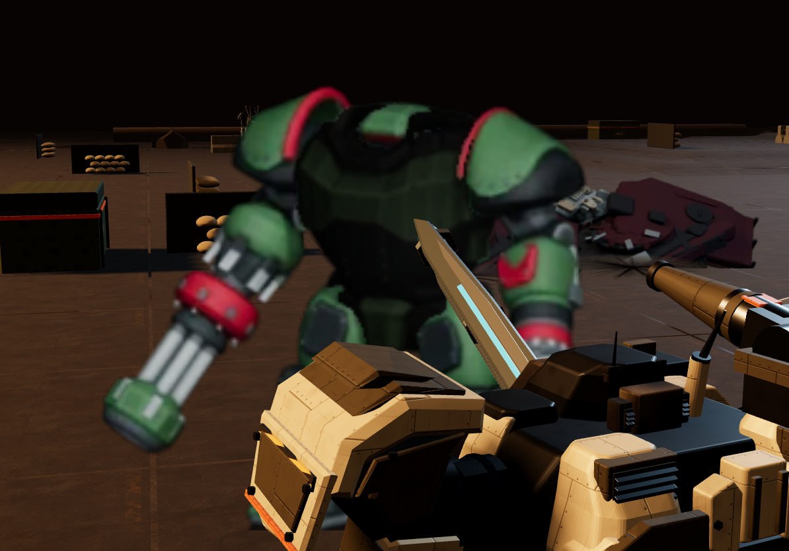

Seed4264; enemyphase; event361 ally1→enemy1. Incoming Piledriver event360 hit PILOT55→19. Actual1194×834 DPR1 Three.js renderer canvas; UI excluded. Original shoulder camera crops the actor. Working-fix source archived; see manifest.
